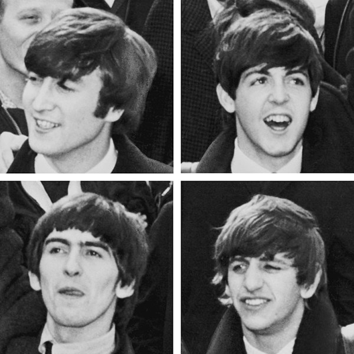

Introduction
The Beatles were an English rock band, formed in Liverpool in 1960, that comprised John Lennon, Paul McCartney, George Harrison and Ringo Starr. They are regarded as the most influential band of all time and were integral to the development of 1960s counterculture and popular music's recognition as an art form.
Rooted in skiffle, beat, and 1950s rock and roll, their sound incorporated elements of classical music and traditional pop in innovative ways; the band later explored music styles ranging from ballads and Indian music to psychedelia and hard rock. As pioneers in recording, songwriting, and artistic presentation, the Beatles revolutionized many aspects of the music industry and were often publicized as leaders of the era's youth and sociocultural movements.
Led by primary songwriters Lennon and McCartney, the Beatles evolved from Lennon's previous group, the Quarrymen, and built their reputation playing clubs in Liverpool and Hamburg over three years from 1960, initially with Stuart Sutcliffe playing bass. The core trio of Lennon, McCartney, and Harrison, together since 1958, went through a succession of drummers, including Pete Best, before asking Starr to join them in 1962.
Manager Brian Epstein molded them into a professional act, and producer George Martin guided and developed their recordings, greatly expanding their domestic success after their first hit, "Love Me Do", in late 1962. As their popularity grew into the intense fan frenzy dubbed "Beatlemania", the band acquired the nickname "the Fab Four", with Epstein, Martin, and other members of the band's entourage sometimes given the informal title of "fifth Beatle".
We can work it out. Life is very short, and there's no time for fussing and fighting, my friend.
By early 1964, the Beatles were international stars and had achieved unprecedented levels of critical and commercial success. They became a leading force in Britain's cultural resurgence, ushering in the British Invasion of the United States pop market, and soon made their film debut with A Hard Day's Night (1964).
From 1965 onwards, they produced records of greater sophistication, including the albums Rubber Soul (1965), Revolver (1966) and Sgt. Pepper's Lonely Hearts Club Band (1967), and enjoyed further commercial success with The Beatles (also known as "the White Album", 1968) and Abbey Road (1969). Heralding the album era, their success elevated the album to be the dominant form of record consumption over singles; they also inspired a greater public interest in psychedelic drugs and Eastern spirituality, and furthered advancements in electronic music, album art, and music videos.
In 1968, they founded Apple Corps, a multi-armed multimedia corporation that continues to oversee projects related to the band's legacy. After the group's break-up in 1970, all principal members enjoyed success as solo artists and some partial reunions have occurred. Lennon was murdered in 1980 and Harrison died of lung cancer in 2001. McCartney and Starr remain musically active.

The Beatles are the best-selling music act of all time, with estimated sales of 600 million units worldwide. They hold the record for most number-one albums on the UK Albums Chart (15), most number-one hits on the Billboard Hot 100 chart (20), and most singles sold in the UK (21.9 million).
The band received many accolades, including seven Grammy Awards, four Brit Awards, an Academy Award (for Best Original Song Score for the 1970 documentary film Let It Be) and fifteen Ivor Novello Awards. They were inducted into the Rock and Roll Hall of Fame in 1988, and each principal member was inducted individually between 1994 and 2015. In 2004 and 2011, the group topped Rolling Stone's lists of the greatest artists in history. Time magazine named them among the 20th century's 100 most important people.
No band has influenced pop culture the way The Beatles have. They were one of the best things to happen in the twentieth century, let alone the Sixties. They were youth personified. They were unmatched innovators who were bigger than both Jesus and rock & roll itself: During the week of April 4, 1964, the Beatles held the first five slots on the Billboard Singles chart; they went on to sell more than a billion records; and 2000's 1, a compilation of the Beatles Number One hits, hit Number One in 35 countries and went on to become the best-selling album of the 2000s.